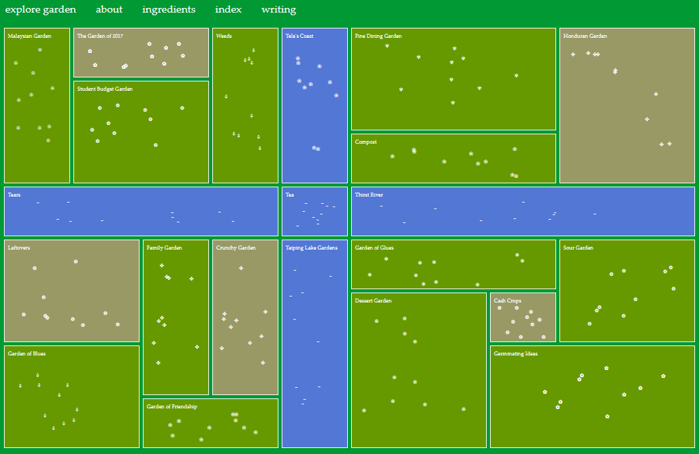
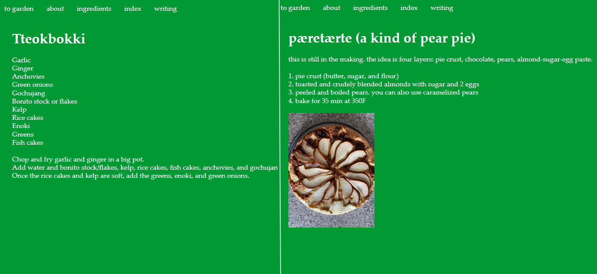
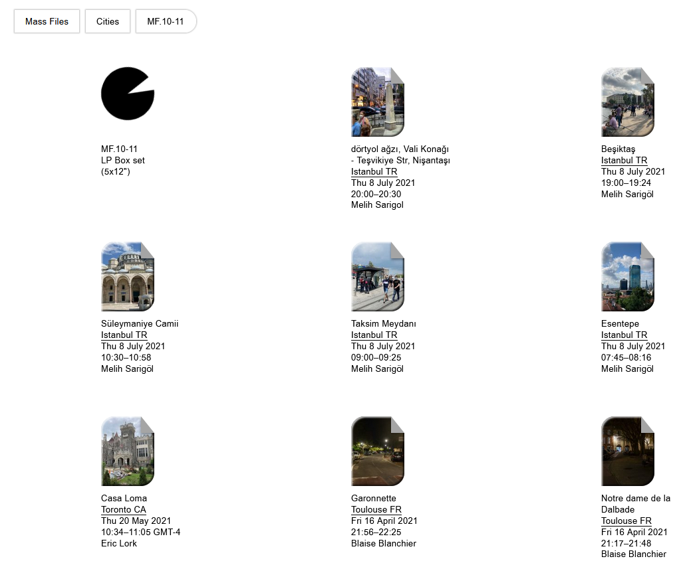
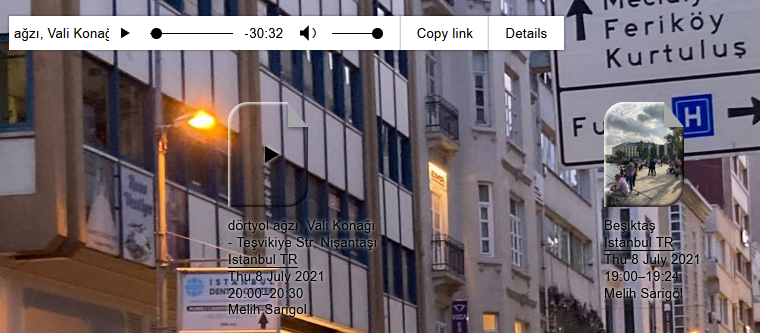
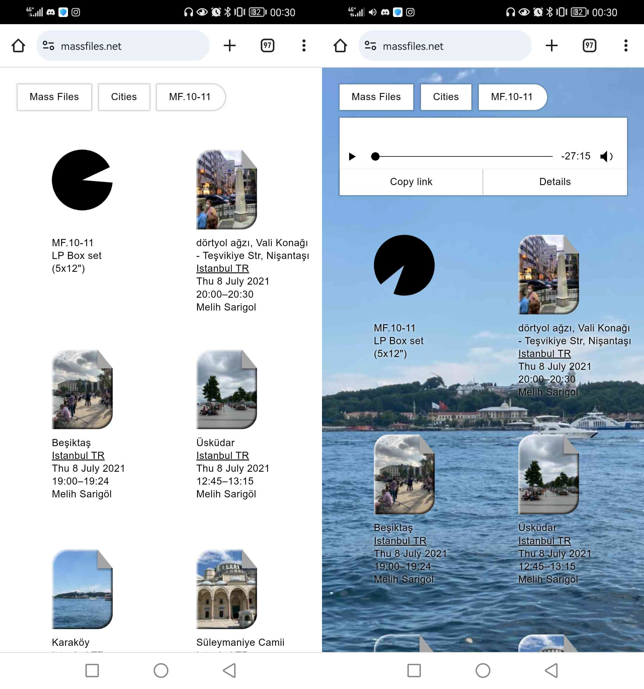
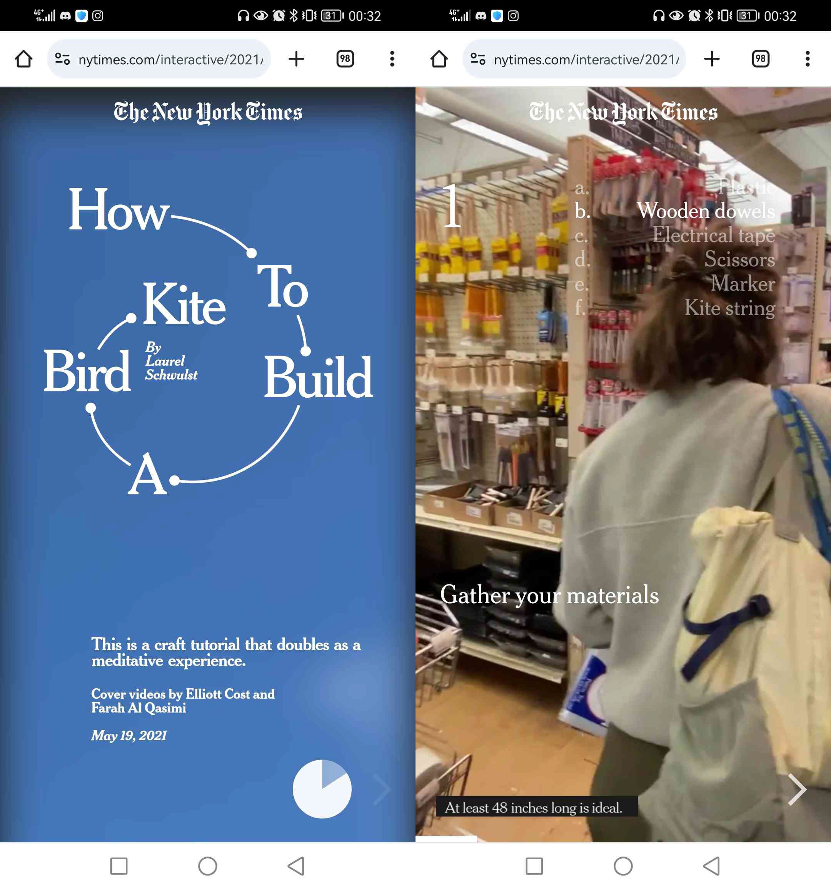

“garden of blues”
“garden of blues”는 친구 2명이 만든 귀여운 웹사이트이다. '우정의 정원'을 통해 많은 음식을 만들어 함께 나눌 수 있다는 것을 다른 사람들과 공유하기 위해 만들었다. 그들은 음식을 공유했을 뿐만 아니라 서로의 문화도 공유했다. 이것이 바로 웹사이트에 다양한 음식 조리법이 있는 이유이다.
 나는 이 웹사이트가 매우 단순해 보이기 때문에 좋아한다. 색상 팔레트가 눈에 좋다. 꽃이 조금 더 클 수도 있지만 그건 내 의견일 뿐이다. 이 웹사이트는 꽃을 클릭하면 간단한 조리법을 제공하는 정원이다. 사진이 있어야 하는데 로드하는 데 시간이 걸리거나 전혀 로드되지 않다. 휴대폰에 있는 웹사이트의 글꼴은 눈에도 매우 좋다. 읽기 쉽고 글자 간격도 좋다. 휴대폰에서 사진이 더 빨리 로드했다.
“Mass Files”
“Mass Files”은 선택한 위치의 소리를 들을 수 있는 웹사이트이다. 분주한 군중 소리나 스케이트보드 타는 소리를 듣는다. 사람의 소리를 듣는 것을 좋아하는 사람들에게 좋다.
 각 소리의 분위기를 좋아한다. 이 웹사이트의 컨셉은 매우 흥미롭다. 그리고 디자인이 조금 어수선해 보이지만 큰 문제는 아니다. 여전히 쉽게 탐색할 수 있다. 언더글로우 때문에 여전히 글꼴을 볼 수 있다. 어쨌든 글은 주요 초점이 아니므로 괜찮다.
PC에서와 마찬가지로 휴대폰에서도 깨끗하고 조직적인이다. 듣고 싶은 소리를 선택하면 해당 사진이 PC와 휴대폰 모두 배경화면이 되는 점이 좋아한다.
“How to Build a Kite” by Laurel Schwulst
제목에서 알 수 있듯이 웹사이트에서는 연 만드는 방법을 보여준다. 깔끔한 외관과 자세한 지침이 제공한다. 연을 만드는 방법에 대한 YouTube 동영상을 만드는 것과 같다. 하지만 그 대신 응집력 있는 웹사이트이다. 단계를 보여준다. 그리고 그 단계 내에서 무엇을 수집하고 어떻게 만드는지에 대한 더욱 자세한 지침을 보여준다. 나는 시청자가 연을 만들고 싶을 때 따라가는 것이 얼마나 명확하고 쉬운지 좋아한다.
웹사이트는 휴대폰에서도 쉽게 탐색할 수 있다. 다만 배경영상이 너무 느려서 조금 불편하다. 영상과 달리 자막이 느리지 않다. 그래서 휴대폰으로 쉽게 지침을 따를 수 있다.